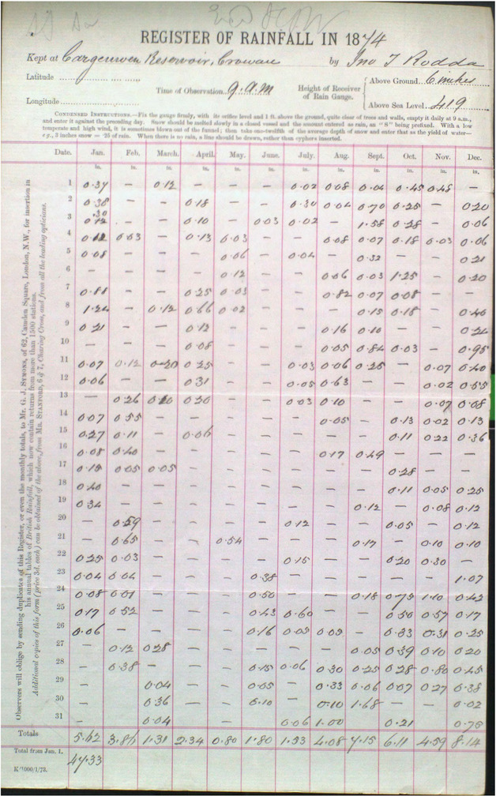

Auto Daily Rainfall¶
Rescuing daily rainfall observations from historical documents, using small vision-language models instead of thousands of human volunteers.
The Rainfall Rescue project showed that historical weather records could be recovered from paper archives by an army of volunteers. Its successor, Robot Rainfall Rescue, showed that an ensemble of small vision-language models (VLMs) could do the same job for the monthly rainfall sheets — matching volunteer accuracy without recruiting, training, and managing anyone.
This project applies that approach to the far larger and harder collection of daily rainfall registers: about 660,000 scanned station-year images, each a dense grid of daily rainfall totals. Success means converting every image into a structured table of numbers that can be ingested into a database.
{kind=link}

A single scanned daily rainfall register. Each image holds one station’s daily rainfall totals (mm) — rows for days 1–31, columns for the months, plus monthly totals. The task is to turn this into a table of numbers.¶
The approach¶
We don’t try to impose our own structure on the problem. Instead we take small, open-weight VLMs, fine-tune them on the rainfall task, and let them read the images directly into JSON. The work proceeds in staged rounds, and — importantly — each round is driven by a notebook that you can open, read, and run.
Preparation — generate synthetic training data with known values, and import a small hand-transcribed test set for validation.
Zeroth order — measure the raw, un-fine-tuned models to establish a baseline.
First order — fine-tune every model on the synthetic data and re-measure.
Second order — build a consensus training set from where the first-order models agree on real images, fine-tune again on that, and re-measure.
Operations — run the finished ensemble over the full 660,000-image dataset.
The workflow overview explains how the notebooks fit together; the pages under it walk through each stage.
Does it work?¶
Yes. Measured on 64 real, hand-transcribed images (Ciara Ryan’s Irish daily rainfall sheets), the models improve dramatically across the rounds:
Model |
Zeroth order (raw) |
First order (fake) |
Second order (consensus) |
|---|---|---|---|
Granite |
46% |
92% |
95% |
Ministral |
62% |
85% |
94% |
Gemma-3 |
21% |
70% |
90% |
Gemma edge |
39% |
66% |
89% |
SmolVLM |
32% |
68% |
87% |
Per-cell accuracy against hand-transcribed ground truth.
The raw models are hopeless — the best gets under two thirds of the values right. After two rounds of fine-tuning, every model is in the high eighties or better, and an ensemble that requires agreement between models does better still. As with the monthly sheets, this is comparable to human volunteers, and it scales.
Get started¶
Installation — set up the environment.
Workflow overview — the staged, notebook-driven pipeline.
How to reproduce and extend — code, compute, and credits.